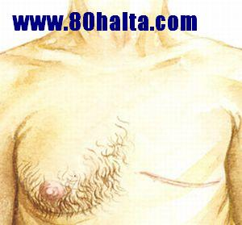

ئەسسالامۇ ئەلەيكۇم مۆھتىرەم تورداش، بلوگىمىزغا خۇش كەپسىز، قۇتلۇق قەدەملىرىڭىزگە مەرھابا!
 كۆكنار غوزىكىدە چاي دەملەپ ئىچىشنىڭ ئاقىۋېتى ھەققىدە
كۆكنار غوزىكىدە چاي دەملەپ ئىچىشنىڭ ئاقىۋېتى ھەققىدە
ئاپتورى:Birzat ۋاقتى:2013-05-22
ھازىر بەزى بىر چايخانىلاردا ئىسمى ناھايىتى چىرايلىق بولغان <<مەرۋايىت چېيى>> نامىدىكى بىر چايغا بەزى كىشىلەر ئاقىۋېتىنى ئويلاپ كۆرمەستىن ياكى بىلمەستىن مەپتۇن بولۇپ قالغان بولۇپ، بۇ ھەقتە مەندىن سورىغانلار خىلى كۆپ بولغان بولغاچقا شۇ چاينى بىلمەي ئىچىۋاتقانلار بۇنىڭ ئاقىۋىتىنىڭ ياخشى بولمايدىغانلىقىنى، كۆكنار غوزىسى دەملەپ ئىچكەنلىك ئەپيۇن ئىستىمال قىلغانلىق، ئەپيۇن ئىستىمال قىلغانلىق ئاستا-ئاستا خۇمار قىلىپ ئەقلىنى، جىسمانىي قۇۋۋەتلەرنى خورىتىپ ئۆزىنى تۈگەشتۈرگەنلىك، ئەۋلاتلىرىمىزنىڭ پاكىز تۇغۇلىشى، ساغلام چوڭ بولىشىغا سەلبىي تەسىر پەيدا قىلغانلىق، شۇڭا ئادەملەر، كىشىلەر، دوستلار ماڭا قۇلاق سىلىڭلار، مەن بىلگىنىمنى دېدىم، ۋاقىتلىق راھەت، ھوزۇر قوغلىشىپ ئۆزۈڭلارنى ھالاكەتكە تاشلىماڭلار!
خەتكۈش: ئەپيۇن،
ئەرلەر ساغلاملىقى ۋە ھەسەل
ئاپتورى:Birzat ۋاقتى:2012-12-07
باش تېرىسى ياغلىق بولۇشنىڭ 6 خىل سىرى
ئاپتورى:Birzat ۋاقتى:2011-11-14
 دۆلىتىمىزتىكى 50%ئادەمنىڭ باش تىرىسى ساغلام ئەمەس
دۆلىتىمىزتىكى 50%ئادەمنىڭ باش تىرىسى ساغلام ئەمەس
ئىلاۋە :دۇنيا سەھىيە تەشكىلاتىنىڭ 10 تۈرلۈك ساغلاملىق ئۆلچىمىنىڭ توققۇزىنجىسى چاچ پاقىراق بولۇش ، كىپەك بولماسلىق . باش تىرىسىنىڭ ساغلام بولۇشى تەننىڭ ساغلاملىقىغا چىتىلىدۇ ، جوڭگودا يېرىمدىن كۆپرەك قۇرامىغا يەتكەنلەرنىڭ باش تىرىسى ساغلاملىقىدا مەسىلە بار . باش تىرىسىنى چاچ دائىم يېپىپ تۇرغانلىقتىن دىققەت قىلمىسا بولمايدىغان بىر ‹سىرلىق بەلباغ› قا ئايلىنىپ قالدى.
توي كېچىسى ئالدىدىكى يېگىتكە ئېيتىلىدىغان سۆزلەر
ئاپتورى:Birzat ۋاقتى:2011-10-25
يېگىت قولداشنىڭ ئەخمىقانە يول كۆرسىتىشلىرى بىلەن توي كېچىسىدە ھەر خىل كۆڭۈلسىز ئىشلارنىڭ بولۇپ قالىدىغانلىقى ئانچە-مۇنچە قۇلقىمىزغا كىرىپ تۇرىدۇ. بىر قولداش توي قىلغۇچى يېگىت دوستىغا ئالاھىدە << دورا >> ئەكىلىپ بىرىدۇ. يېگىتنىڭ ئەسلى تەبئىتىدىكى قوپاللىق بىلەن <<دورا>>نىڭ تەسىرى قوشۇلۇپ يېگىت توي كېچىسى بىر ياۋايىغا ئايلىنىدۇ دە مەڭگۈلۈك ئۆمۈر جۈپتىنىڭ روھىي ۋە جىسمانىيتىگە ئېغىر جاراھەت قالدۇرىدۇ. قىز بىھۇش بولۇپ قانسىراپ كېتىدۇ. يەڭگىلەر پاتپاراق بولۇپ قىزنى دوختۇرغا ئىلىپ مېڭىشىدۇ. قىز شۇ تۇرقىدا 20 كۈنلار ئەتراپىدا دوختۇرخانىدا داۋالىنىدۇ...ئۇنىڭدىن كىيىنكى تەپسىلاتلاردىن خەۋەرسىزمىز. يەنە بىر توي كېچىسى يېگىتنىڭ ئۆلىمى بىلەن ئاخىرلاشقانلىقىنى ئاڭلاپ كىشىلەر ياقىلىرىنى تۇتۇشتى. يېگىت قولداشنىڭ ئېيتىشىچە توي كېچىسى يېگىت <<دورا>> يېگەن. ئىشلىرىنى پۈتتۈرۈپ مىھمانخانىغا بىرىپ يۇيۇنۇپ ئۇخلاپ قالغانچە ئويغىنالمىغان. كىيىن جەسىدى بايقالغاندىن كىيىن دوختۇرلار، يوشۇرۇن يۈرەك كېسىلى سەۋەبىدىن بولغان دېگەنمىش. مانا مۇشۇنداق پاجىئەلەر يېگىتنىڭ ساۋاتسىزلىقى، جىنسىيەت چۈشەنچىسىنىڭ چولتىلىقىدىن بولغان دەپ قارايمىز. مومكىن بولسا توي كېچىسى ھەققىدە يېگىتكە ئىش ئۈگۈتىدىغان كىشى يېگىتنىڭ يېقىن تۇققانلىرىدىن تاغىسى ياكى دادىسى بولسا ياخشى دەپ قارايمىز. تۆۋەندە توي كېچىسى ئالدىدىكى يېگىتكە ئېيتىلىدىغان نەسىھەتلەر قىسقىچە بايان قىلىنىدۇ:
ئەرلەردىكى پاينەكباشلىق ۋە ئەرلىك ھورمۇن
ئاپتورى:Birzat ۋاقتى:2011-10-07
بۇ كېسەلنىڭ پەيدا بولۇشى بەدەندىكى ئەرلىك ھورمۇن بىلەن زىچ مۇناسىۋەتلىك. ئىلگىرىكى ۋاقىتلاردا خان-پادىشاھلارنىڭ، بايلارنىڭ ئوردا-سارايلىرىدا ئىشلەيدىغان ئاغۋاتلارنىڭ كىچىكىدىلا ئۇرۇقدىنىنى ئېلىۋەتكەن بولغاچقا ئۇلاردا پاينەكباشلىق بولمايدۇ. ئەگەر ئۇلار كېسەلگە دۇچار بولۇپ تېستوستېرون (ئەرلەردىكى بىر خىل ھورمۇن) بىلەن داۋالاش زۆرۈر بولۇپ قالسا، داۋالانغاندىن كىيىن چاچ چۈشىدۇ. 1000 يىللار بۇرۇن ياشاپ ئۆتكەن تېبابەت ئالىمى ئىبنى سىنا <<شىفا>> دېگەن كىتابتا: <<ئاياللار بۇ سەلئىي كېسەللىككە ئۇچرىمايدۇ. چۈنكى ئاياللاردا ھۆللۈك كۆپ بولىدۇ. ئاختا قىلىنغان كىشىلەر ھەم بۇ كېسەلگە ئۇچرىمايدۇ، چۈنكى بۇلارنىڭ مىزاجى ئاياللارنىڭ مىزاجى تەرىپىگە مايىل بولىدۇ. ئۇلاردىكى ھۆللۈك تارقاپ كەتمەيدۇ>> دېگەن ئىكەن. بۇ خىل كېسەل ئىرسىيەت بىلەن مۇناسىۋەتلىك بولغاچقا جەمەتلىك پاينەكباشلىق دېيىلىدۇ. نۇرغۇن بىمارلارنىڭ ئائىلىسىنى تەكشۈرگەندە.....
(سۈرەت تېما بىلەن مۇناسىۋەتسىز. سۈرەتتىكى داڭلىق مۇسۇلمان ناخشىچى ماھىر زەينمۇ پاينەكباش بولۇپ كۆپۈنچە ۋاقىتتا شەپكە كىيىپ سەھنىگە چىقىدۇ ) داۋامىنى تەپسىلاتىغا كىرىپ كۆرگەيسىز...
) داۋامىنى تەپسىلاتىغا كىرىپ كۆرگەيسىز...
ياشلاردا راستىنلا قان سوۋۇش، ئەرلىك زەئىپلىك ئېغىرلاپ كېتىۋاتامدۇ؟
ئاپتورى:Birzat ۋاقتى:2011-09-25

تۇرمۇش، تېرىكچىلىك ئۇسۇلىمىزدىكى جىددىيچىلىك سەۋەبلىك شەھەرلەردە قۇياش نۇرىغا تۇيۇنغىدەك قاقلىنالمىغاننى ئاز دەپ ھاۋا تەڭشىگۈچ، توڭلاتقۇدىكى مۇزلۇق ئىچىملىكلەر، مۇزلىتىلغان گۆش، مېۋە-چېۋە، كۆكتاتلار كەبىي قاننى سوۋۇتۇپ، پەي-ئەسەپلەرنى بوشىتىدىغان يېمەك-ئىچمەك ۋە ۋاقىتلىق بولسىمۇ راھەت قوغلىشىدىغان زامانىۋى تۇرمۇش ئادەتلىرىگە كۆنۈپ قالدۇق. ياشلارنىڭ ئۆزىنى ئاسىراش، سالامەتلىككە دىققەت قىلىش، مىزاجىغا بىقىپ ئوزۇقلىنىش قارىشى يىتەرسىز بولغاچقا چوڭلارنىڭ بۇ ھەقتىكى ئەسكەرتمىلىرىگە ئاڭسىز رەۋىشتە بىپەرۋا قارايدۇ. بەدەن سوغۇق، كەيپىيات ئېغىر، پەيلەر بوشاشقان ئەھۋالدا تېۋىپ يېنىغا بىرىپ تومۇر تۇتقۇزماقچى بولىدۇ. ياشلارنىڭ تومۇرىنى تۇتقان كۆپۈنچە تېۋىپلارنىڭ دەيدىغىنى: بۆرەك سوۋۇپ كېتىپتۇ. قاننىڭ ھەركىتى ئاجىز، ئومومىي بەدەننىڭ ئوزۇقلۇق، قۇۋۋەتنى سۈمۈرۈش ئىقتىدارى ئاجىزلىغان. پەي-مۇسكۇللار بوشاپ قۇۋۋەت تۆۋەنلەپتۇ. سوغۇق ئىچىملىك، ئاچچىق، يەللىك، قېتىق، دوغاپ دېگەندەكلەرنى ئىچمىسىلە، بەدەن چىنىقتۇرۇپ قاننى قىززىتىپ بەرسىلە...
تېۋىپلارنىڭ تومۇرىنى تۇتقانلىكى ياشلارنى بۆرەك سوۋۇپتۇ، پەي ئاجىز دېيشىدىكى مەقسەت پۇل تېپىشمىدۇ ياكى زامانىمىز ياشلىرىدا راستىنلا قان سوۋۇش، ئەرلىك زەئىپلىك ئېغىرلاپ كېتىۋاتامدۇ ....
ئەيدىز قىزنىڭ ئۆچ ئېلىشى
ئاپتورى:Birzat ۋاقتى:2011-05-31

بەزى تەپسىلاتلارنىڭ جەمىيەتكە ئاشكارلىنىپ كېتىشنىڭ ئالدىنى ئېلىش ئۈچۈن ئورۇن، ۋاقت، كىشى ئىسىملىرى قاتارلىقلار بېرىلمىدى.(ھېكايە شەكلىدە ) تورداشلارنىڭ قاتتىق ئويلىنىپ بېقىشىنى ئۈمىد قىلىمەن.
ـــــــــــ
تېلېفۇننىڭ قايتا- قايتا سايرىشى يەكشەنبىلىك بالىلرىم بىلەن بېلىق تۇتۇش، دەم ئېلىش ئارامىنى بۇزدى.
تېلېفۇن شەھەرلىك ساقچىخانىدىن كەلگەن ئىدى.
ــ تىز كەلمىسىڭىز بولمايدۇ، ئىنتايىن مۇھىم ئەھۋال يۈز بەردى،- دېدى ساقچىخانا باشلىقى كەسكىن تەلەپپۇزدا.
يەكشەنبىلىك تاتلىق دەم ئېلىشقا قىيالمىغان ھالدا ساقچىخانا تەرەپكە ماشىنىنىڭ رولىنى بۇرۇدۇم...
ئالدىراش كىرسەم ئىشخانىدا 25ياشلار چامىسىدىكى چىرايلىق بىر قىز بىر نەچچە ساقچىلارنىڭ ھەمراھلىقىدا مېنى كۈتۈپ تۇرۇپتۇ. قىز گەرچە ھۆسىن- جامالدا ۋايىغا يەتكەن گۈزەللەردىن بولسىمۇ، بىراق چىرايى خۇددى كۆرپىنىڭ تېگىدە قالغان شەپكىدەك سەتلىشىپ، دومسىيىپ تۇراتتى.
مالۇخۇلىيا ھەققىدە
ئاپتورى:Birzat ۋاقتى:2011-03-23
ﻳﺎﺷﻼﺭﺩﺍ ﻳﯜﺯ ﺑﻪﺭﮔﻪﻥ ﻣﺎﻟﯩﻴﺎﻟﺨﻮﻟﯩﻴﺎ ﻛﯧﺴﻪﻟﻠﯩﻜﯩﻨﯩﯔ ﺳﻪﯞﻩﺑﭽﯩﺴﻰ ﺟﻪﻟﯩﻖ ﻳﻪﻧﻰ ﻗﻮﻟﺪﺍ ﻳﺎﻛﻰ ﺯﺍﻣﺎﻧﯩﯟﻯ ﯬﺳﯟﺍﭘﻼﺭ ﯪﺭﻗﯩﻠﯩﻖ ﺳﯜﻧﺌﻰ ﯰﺳﯘﻟﺪﺍ ﻣﻪﻧﻰ ﭼﯩﻘﯩﺮﯨﭗ ﻟﻪﺯﺯﻩﺗﻠﯩﻨﯩﺶ ﯪﺩﯨﺘﻰ ﺋﯩﻜﻪﻧﻠﯩﻜﯩﻨﻰ ﺑﺎﻳﻘﯩﺪﯨﻢ. ﺷﯘﯕﺎ ﺑﯘ ﺧﯩﻞ ﺋﯩﻠﻠﻪﺗﻜﻪ ﮔﯩﺮﯨﭙﺘﺎﺭ ﺑﻮﻟﻐﺎﻥ ﻳﺎﺷﻼﺷﻨﯩﯔ ﻗﺎﺗﺘﯩﻖ ﺩﯨﻘﻘﻪﺕ ﻗﯩﻠﯩﺸﯩﻨﻰ ﺗﻪﯞﺳﯩﻴﻪ ﻗﯩﻠﯩﻤﻪﻥ.
ﭼﯜﻧﻜﻰ ﺑﯘ ﺧﯩﻞ ﯪﺩﻩﺕ ﻧﻮﺭﻣﺎﻝ ﻓﺌﺰﯨﯯﻟﻮﮔﯩﻴﯩﻠﯩﻚ ﯞﻩ ﭘﯩﺴﺨﻮﻟﻮﮔﯩﻴﯩﻠﯩﻚ ﭘﺎﯪﻟﯩﻴﻪﺕ ﺑﻮﻟﻐﺎﻥ ﺟﯩﻨﺴﻰ ﯪﻻﻗﯩﺪﯨﻦ ﻛﯚﭖ ﭘﻪﺭﻗﻠﯩﻨﯩﺪﯗ. ﻫﻪﻣﺪﻩ ﻣﯧﯖﯩﻨﯩﯔ ﻗﯘﯞﯞﯨﺘﯩﻨﻰ ﺯﻭﺭ ﺩﻩﺭﯨﺠﯩﺪﻩ ﺧﯘﺭﯨﺘﯩﺪﯗ، ﺷﯘ ﺳﻪﯞﻩﺑﻠﯩﻚ ﻣﺎﻟﯩﺨﻮﻟﯩﻴﺎ، ﺗﯧﺨﯩﻤﯘ ﺗﻪﺭﻩﻗﻘﻰ ﻗﯩﻠﺴﺎ ﺳﺎﺭﺍﯕﻠﯩﻖ ﻛﯧﺴﻪﻟﻠﯩﻜﯩﻨﻰ ﻛﻪﻟﺘﯜﺭﯛﭖ ﭼﯩﻘﯩﺮﯨﺪﯗ، ﺑﯘ ﺧﯩﻞ ﻛﯧﺴﻪﻟﯩﻜﻜﻪ ﮔﯩﺮﯨﭙﺘﺎﺭ ﺑﻮﻟﻐﺎﻥ ﺑﯩﻤﺎﺭﺩﺍ ﺗﻮﻱ ﻗﯩﻠﯩﺸﺘﯩﻦ ﻗﻮﺭﻗﯘﺵ، ﯮﺭﯗﻧﺴﯩﺰ ﮔﯘﻣﺎﻧﻠﯩﻨﯩﺶ، ﻛﯧﭽﯩﺴﻰ ﯰﺧﻠﯩﻴﺎﻟﻤﺎﺳﻠﯩﻖ، ﻛﯚﭖ ﭼﯜﺵ ﻛﯚﺭﯛﺵ، ﯰﻳﻘﯘﻏﺎ ﻗﺎﻧﻤﺎﺳﻠﯩﻖ، ﻫﺎﺭﻏﯩﻨﻠﯩﻖ ﻫﯧﺮﺱ ﻗﯩﻠﯩﺶ ﯪﻻﻣﻪﺗﻠﯩﺮﻯ ﻛﯚﺭﯛﻟﯩﺪﯗ.
خەتكۈش: مالۇخۇلىيا
18ياشلىقلارغا 10 تەۋسىيە [ئەركەكلەر]
ئاپتورى:Birzat ۋاقتى:2010-12-26

15-16 ياشتىن تارتىپ تاكى 21 ياشقىچە بولغان ۋاقىت ياش-ئۆسمۈرلەرنىڭ ئۆسۈپ يېتىلىۋاتقان، ئەزالار تەرەققى قىلىۋاتقان موھىم بىر مەزگىلى. ئاتىلار سۆزى بويچە ئېيتقاندا ئوغۇلبالىغا يىلىك توشىدىغان، سۆڭەك قاتىدىغان ۋاقىت. مۇشۇ موھىم مەزگىلدە ئانانىزىمغا ئادەتلىنىپ قىلىش، كۆپ ئىھتىلام بولۇش ئۇزۇن ۋاقىت داۋام قىلىش، قۇۋۋەتلىك ئوزۇقلانماسلىق ۋە ھەرخىل روھىي بېسىم دېگەندەكلەر قوشۇلۇپ كىيىنكى جىسمانىي ۋە روھىي ساغلاملىققا بەزى-بىر سەلبىي تەسىرلەرنى كۆرسىتىدۇ. بۇ ھەقتە ئىلگىركى تېمىلاردا كۆپ توختالغان بولغاچقا قايتا سۆزلەپ ئولتۇرۇشنىڭ ھاجىتى يوق دەپ قارايمەن. سىزنىڭ ھازىر ئۇ ئادەتتىن قول ئۈزۈپ ساغلام روھىي ھالەتنى ساقلىغىنىڭىزنىڭ ئۆزى سىز ئۈچۈن چوڭ ئىش دېسەكمۇ بولىدۇ. بۇندىن كىيىن ناتوغرا ئادەتلەرگە ئۈگۈنۈپ قىلىشتىن ئىمكان بار ساقلىنىپ ئىلمىي ئوزۇقلىنىشقا ئەھمىيەت بىرىپ، بەدەن چىنىقتۇرۇشنى داۋاملاشتۇرۇپ بەرسىڭىز كىيىنكى تۇرمۇشىڭىزغا بەك چوڭ تەسىرى بولۇپ كېتىشى ناتايىن.
بۇندىن كىيىن ئانانىزىمنىڭ يامان تەسىرىنىڭ بولىشىدىن ساقلىنىش ئۈچۈن 18 ياشلىق دوستلارغا تەۋسىيەم:
سېمىز ئەرلەر ئاسان قېرىپ كېتىدۇ
ئاپتورى:Birzat ۋاقتى:2010-10-10
ئامېرىكا ماسسا – چۇستىس شىتاتى يېڭى ئېنگلاند تەتقىقات ئۇنىۋېرسىتېتىنىڭ تەتقىقاتچىلىرى يېقىندا ئەرلەرنىڭ بەدەن ئېغىرلىقىنىڭ ئېشىپ كېتىشى ئۇرۇقداننىڭ ھورمون ئاجرىتىپ چىقىرىش ئىقتىدارىنى زور دەرىجىدە تۆۋەنلىتىۋېتىپ، قېرىشنى تېزلىتىۋېتىدىغانلىقىنى ئوتتۇرىغا قويدى.
تەتقىقاتچىلاردىن بىرى بولغان توماس ماۋۇلارنى بىلدۈردى: ئەرلەرنىڭ يېشىنىڭ چوڭىيىشىغا ئەگىشىپ، ئۇرۇقداننىڭ ھورمون ئاجرىتىپ چىقىرىش ئىقتىدارى بارا – بارا تۆۋەنلەيدۇ، بۇمۇ ئەرلەرنىڭ ئوتتۇرا ياشتىن ئاشقاندىن كېيىن ئاسانلا قەنت كېسىلى، سۆڭەك ماددىسى بوشىشىش كېسىلى، مۇسكۇللار بوشىشىش ۋە قەۋزىيەت قاتارلىق كېسەللىكلەرگە گىرىپتار بولۇشىنىڭ بىر سەۋەبى بولۇشى مۇمكىن.
بۇ تەتقىقاتنىڭ مۇھىم نۇقتىسى ئەرلەرنىڭ ئۇرۇقدىنىنىڭ...............
مۇۋاپىق بولغان جىنسىي مۇناسىۋەت قېتىم سانى قانچە بولسا بولىدۇ
ئاپتورى:Birzat ۋاقتى:2010-10-05
بىر قېتىم مۇناسىۋەت قىلىپ بولغاندىن كىيىن قانچە ۋاقىتتىن كىيىن قايتا مۇناسىۋەت قىلىش مۇۋاپىق؟ بۇ مەسىلىگە ناھايتى ئىنىق قىلىپ جاۋاب بىرىش ئىنتايىن تەس. بۇ ئەر-خوتۇن ئىككىسىنىڭ يېشى، تەن سالامەتلىكى، كەسپى، مىجەزى، روھىي كەيپىياتى، موھىت،ئوزۇقلۇق شارائىتى قاتارلىق ئامىللار ئارقىلىق بەلگىلىنىدۇ. جىنسىي مۇناسىۋەت سانىنى مۇقەررەر ھالدا ھەپتىدە ياكى ئايدا مۇنچە قېتىم بولسا مۇۋاپىق بولىدۇ دەپ كېسىپ ئېيتماق ئۇنچە ئاسان ئەمەس. ئىلگىركى ھۆكۈمالار ساغلام كىشىلەر ھەپتىدە 2 قېتىم جىنسىي مۇناسىۋەتتە بولسا جىنسىي قۇۋۋەتنى ئۇزۇن مەزگىل داۋاملاشتۇرغىلى، قىرىشنى كېچىكتۈرگىلى بولىدۇ دەپتىكەن.
يېڭى تۇرمۇش قۇرغاندا جىنسىي تەلەپ كۈچلۈك بولۇپ ، جىنسىي مۇناسىۋەت قېتىم سانىمۇ كۆپ بولىدۇ.
خەتكۈش: جىنسىي
قانلىق مەنىي كېلىش
ئاپتورى:Birzat ۋاقتى:2010-10-05

تونۇش: نۇرمال مەنىي سۇيۇقلىقى ئاقۇش، سۈت رەڭلىك ياكى سارغۇچراق سۈت رەڭلىك بولىدۇ. ئەگەر چىقىرىلغان مەنىي سۇيۇقلىقى قىزغۇچ، قىزىل، جىگەر رەڭ ياكى مەنىي تەركىبىدە ئۇيۇغان ئۇششاق قان مونەكچىلىرى بولسا، مەنىيگە قان ئارىلىشىپ كەلگەنلىكتىن بولۇشى مومكىن. بۇ قانلىق مەنىي ياكى مەنىي بىلەن قان كېلىش دەپ ئاتىلىدۇ.
سەۋەبى: بۇ كېسەل كۆپۈنچە مەنىي ئىشلەپچىقىرىش ئەزالىرىنىڭ بىرەرسىدە، جۈملىدىن مەنىي خالتىسىنىڭ قان تومۇر دىۋارلىرىدا ياللۇقلىنىش ياكى ئىششىش يۈز بەرسە ياكى مەني خالتىسىنىڭ ئۆزىدە جاراھەت بولسىمۇ مەنىي خالتىسىنىڭ قان تومۇرلىرىنى چىرىتىش نەتىجىسىدە جىنسىي ئالاقە قىلغان ۋاقىتتا مەنىي بىلەن قان ياكى قانلا كېلىش يۈز بىرىدۇ. بۇ ئەھۋالنىڭ پەيدا بولۇشىدا ھەر خىل يۇقۇملۇق جىنسىي كېسەللىكلەر، ئۆتكۈر غېدىقلىغۇچى يېمەك-ئىچمەكلەر، زىيادە كۆپ بولغان جىنسىي مۇناسىۋەت، ئانانىىزمغا ئادەتلىنىپ قىلىش ياكى ئۇزۇن ۋاقىت جىنسىي مۇناسىۋەت قىلماسلىق، جىنسىي مۇناسىۋەت قىلمىغان ئەھۋال ئاستىدا كۆپۈنچە جىنسىي قوزغىلىش ھالىتىدە تۇرۇش، جۈملىدىن سېرىق مەزمۇندىكى كېنو-فىلىملەرنى كۆپ كۆرۈش، يالىڭاچ ئاياللار، شەھۋانىي خىياللارنى كۆپ قىلىش دېگەندەك ئامىللار سەۋەب بولىشى مومكىن.
كېسەللىك ئىپادىلىرى:
پۇتىنى ئالماپ ئولتۇرۇش ۋە سالامەتلىك
ئاپتورى:Birzat ۋاقتى:2010-09-23

نۇرغۇن كىشىلەر ئورۇندۇقتا ئولتۇرغاندا پۇتىنى ئالماپ ئولتۇرۇشقا ئادەتلىنىپ قالىدۇ، پۇتىنى ئالماپ ئولتۇرسا ئۆزىنى ناھايىتى راھەت ھېس قىلىدۇ. ئەمما مۇتەخەسىسلەر شۇنى ئەسكەرتىدۇكى، پۇتىنى ئالماپ ئولتۇرۇش نۇرغۇن كېسەللىكلەرنى كەلتۈرۈپ چىقىرىش مۇمكىن.
خەتكۈش: to sit cross-legged
تور ئويۇنى ئويناش ئەرلەرنىڭ چېچىنىڭ چۈشۈپ كېتىشىدىكى باش جىنايەتچى
ئاپتورى:Birzat ۋاقتى:2010-09-23

تۇرمۇش رېتىمىنىڭ تېزلىشىشى ۋە تۇرمۇش شەكلىنىڭ ئۆزگىرىشىگە ئەگىشىپ، كومپيۇتېر ئىشلىتىدىغانلارنىڭ سانى بارغانسېرى كۆپەيمەكتە، بۇنىڭ بىلەن چاچنىڭ قېرىشىمۇ تېزلەشمەكتە. ئۇزۇن مۇددەت تورغا چىققاندا ۋە تور ئويۇنى ئوينىغاندا، كىشى ئاسانلا چارچايدۇ، مەركىزىي نېرۋا سىستېمىسى ئۇزۇن مۇددەت جىددىي ھالەتتە تۇرغاچقا، نېرۋا قالايمىقانلىشىپ، تېرىدىكى قان تومۇرلارنىڭ قىسقىراش ئىقتىدارى بۇزۇلىدۇ، باش تېرىسىنىڭ قىسمەن جايلىرىدىكى قان تومۇرلارنىڭ قىسقىرىشى تۈپەيلىدىن قان بىلەن تەمىنلەش يېتەرلىك بولماي، تۈك خالتىلىرىنىڭ ئوزۇقلۇق بىلەن تەمىنلىنەلمەسلىكىنى كەلتۈرۈپ چىقىرىدۇ.
خەتكۈش: تور، كومپيۇتېر، ئويۇن
پاينەكباش-تازلار شۇنچە جەلىبكارمۇ؟
ئاپتورى:Birzat ۋاقتى:2010-09-15

ئوي پىكىرى چۇڭقۇر، تەسەۋۋۇرى مول بىر توردىشىم بار. بۇ خانىم ئاجايىپ سۇئاللارنى سوراپ ئۇچۇرلارنى ئەۋەتىپ تۇرىدۇ. تۈنۈگۈن بىر سۇئال سوراپتىكەن، سۇئال مەزمۇنى مۇنداق:
مەيلى خەلق چۆچەكلىرى بولسۇن ياكى ھىكايەتلەر بولسۇن كۆپۈنچىسىدە دېگۈدەك باي-زەردارلارنىڭ، بەگ-پادىشاھلارنىڭ ئاياللىرى، قىزلىرى ئۆز ئۆيلىرىدە ئىشلەيدىغان مالاي تازلارنى ياخشى كۆرۈپ قىلىش سەۋەبلىك پۇللۇق، ئابرويلۇق ئەرلىرىگە خىيانەت قىلىش يولىنى تاللايدىغان ئەھۋال كۆپ ئۇچرايدىكەن. تۇرۇپ ئويلاپ قالدىم: تازلارنىڭ شۇ ئاياللارنى ئۆزىگە رام قىلىۋىلىشىدا قانداق سىر-ھېكمەت باردۇ؟!!!
ئەرلەر بۆرەكنى ئاسىراشنى كىچىكىدىن ئادەت قىلىش كىرەك
ئاپتورى:Birzat ۋاقتى:2010-09-03
 ئەرلەرنىڭ بۆرىكى يۈرەككە ئوخشاشلا ئىنتايىن مۇھىم ، يېقىنقى يىللاردىن بۇيان نۇرغۇنلىغان ئەرلەر ھەرخىل دورىلار ئارقىلىق بۆرىكىنى ئاسىراۋاتقان بولسىمۇ ئەمما ئەرلەر ئۈزىنىڭ تۇرمۇشىدىكى يىمەك-ئىچمەك ۋە ناچار تۇرمۇش ئادىتى قاتارلىق سەۋەبىدىن ئۈزىنىڭ بۆرىكىگە زىيانكەشلىك قىلۋاتقانلىقىغا ئانچە دىقەت قىلىپ كەتمەيدۇ. شۇڭا سىز بۆرىكىڭىزنى ئاسىرىشىڭىزدا چۇقۇم يىمەك-ئىچمەك ۋە ناچار تۇمۇش ئادىتىڭىزنى ئۆزگەرتىشىڭىزدىن باشلشىڭىز كىرەك .
ئەرلەرنىڭ بۆرىكى يۈرەككە ئوخشاشلا ئىنتايىن مۇھىم ، يېقىنقى يىللاردىن بۇيان نۇرغۇنلىغان ئەرلەر ھەرخىل دورىلار ئارقىلىق بۆرىكىنى ئاسىراۋاتقان بولسىمۇ ئەمما ئەرلەر ئۈزىنىڭ تۇرمۇشىدىكى يىمەك-ئىچمەك ۋە ناچار تۇرمۇش ئادىتى قاتارلىق سەۋەبىدىن ئۈزىنىڭ بۆرىكىگە زىيانكەشلىك قىلۋاتقانلىقىغا ئانچە دىقەت قىلىپ كەتمەيدۇ. شۇڭا سىز بۆرىكىڭىزنى ئاسىرىشىڭىزدا چۇقۇم يىمەك-ئىچمەك ۋە ناچار تۇمۇش ئادىتىڭىزنى ئۆزگەرتىشىڭىزدىن باشلشىڭىز كىرەك .
1. پىۋا ئىچىشكە ئامراق بۇلۇش
خەتكۈش: بۆرەك
بۆرەك ئاجىزلىقىنىڭ ئالامەتلىرى The Symptoms of Kidney Weakness
ئاپتورى:Birzat ۋاقتى:2010-09-02

قەدىمكى تېبابەتتە "بۆرەك ئاجىزلاپ كېتىش" تىكى "بۆرەك" پەقەت بەدەندىكى بۆرەك ئەزاسىنىلا كۆرسىتىپ قالماستىن ، بەلكى ئادەمنىڭ جىنسىي كۈچى ، جىنسىي ئالاقىسى ، جىنسىي تۇرمۇشى ، كۆپىيىش سېستىمىسنىڭ ئەھۋالى ، ئۆسۈپ يېتىلىشى ، ھەزىم قىلىش ، ئىچكى ئاجراتمىلارنىڭ نورمال بولۇش بولماسلىقىغا قارىتىلغان ئىدى . "بۆرەك ئاجىزلاش ئالامىتى" مۇ ناھايىتى كەڭ بولغان بىر ئۇقۇم بولۇپ ، ئۇ سۈيدۈك سېستىمىسى ، روھى ساغلاملىق ھەم ھەزىم قىلىش ، قان ، نەپەس ئېلىش قاتارلىق سېستىمىلارغا مۇناسىۋەتلىك كېسەللك . شۇڭلاشقا ، بۆرەك ئاجىزلىشىنىڭ ئالامەتلىرىمۇ ناھايىتى كۆپ بولىدۇ ، ئومۇمەن تۆۋەندىكىچە :
خەتكۈش: بۆرەك ئاجىزلىقىنىڭ ئالامەتلىرى The Symptoms of Kidney Weakness
خورەك تارتىش ئەرلىك ئىقتىدارنى ئاجىزلاشتۇرىدۇ Snoring and Men's Health
ئاپتورى:Birzat ۋاقتى:2010-08-23
 تېببىي مۇتەخەسسىسلەرنىڭ تونۇشتۇرىشىچە ، خورەك تارتىش ئۇيقۇ سۈپىتىگە بىۋاستە تەسىر كۆرسىتىدىكەن . زىيابىتۇس ، يۇقىرى قان بېسىم، سوققان تومۇر قېتىشىش قاتارلىق كېسەللىكلەرنى كەلتۈرۈپ چىقىرىپلا قالماي ، يەنە ئەرلىك ئىقتىدارنى توسالغۇغا ئۇچرىتىدىكەن .
تېببىي مۇتەخەسسىسلەرنىڭ تونۇشتۇرىشىچە ، خورەك تارتىش ئۇيقۇ سۈپىتىگە بىۋاستە تەسىر كۆرسىتىدىكەن . زىيابىتۇس ، يۇقىرى قان بېسىم، سوققان تومۇر قېتىشىش قاتارلىق كېسەللىكلەرنى كەلتۈرۈپ چىقىرىپلا قالماي ، يەنە ئەرلىك ئىقتىدارنى توسالغۇغا ئۇچرىتىدىكەن .
ئەرلىك ئىقتىدار توسالغۇغا ئۇچراش يەنە باھ زەئىپلىشىش ، دەپمۇ ئاتىلىدۇ . ئۇنى كەلتۈرۈپ چىقىرىدىغان سەۋەبلەر ناھايتى كۆپ . مەسلەن ، روھىي ئامىل ، زىيابىتۇس ، يۇقىرى قان بېسىم ، سوققان تومۇر قېتىشىش كېسىلى ۋە بەزى دورا قاتارلىقلار . لېكىن ، خورەك تارتىش بىلەن ئەرلىك ئىقتىدارى توسالغۇغا ئۇچراشنىڭ مۇناسىۋىتىنى كۆپ كىشلەر بىلمەسلىكى مۇمكىن .
خىمىيىلىك بۇيۇملارنىڭ بۇلغىشى ئاستىدىكى جىنىس بۇزۇلۇشى Broken sex
ئاپتورى:Birzat ۋاقتى:2010-08-18

كەلگۈسىدىكى مەلۇم بىر كۈنلەرگە بارغاندا كۆپ ساندىكى ئەرلەر خۇددى بۇلبۇلدەك ئىنچىكە ئاۋازدا ئەتىر توغرىلىق پاراڭغا چۈشىدۇ، ئەركەك ئەرلەر ناھايىتى «ئەتىۋار»لىشىپ كېتىدۇ. بۇ سىزگە «مىڭ بىر كېچە» ھېكايىلىرىدەك تۇيۇلۇۋاتامدۇ؟ ئەمما ئەڭ يېڭى بىرتۈرلۈك تەتقىقاتتا كۆرسىتىلىشىچە، مۇھىتنىڭ بۇلغىنىشى جانۋارلارنىڭ تەدرىجىي تەرەققىياتىغا بۇزغۇنچىلىق قىلىپ، ئەركەك جانلىقلارنىڭ ئانىلىشىشىغا سەۋەب بولغانلىقتىن، كەلگۈسىدىكى ئەرلەر دۇنياسى ھەقىقەتەن بارغانسېرى ئاياللىشىپ كېتىدىكەن.
(رەسىمدە بىر ئەر ئۆزىنىڭ ئۆلسىمۇ ئايال بولىدىغانلىقىنى بىلدۈردى)
ئەرلەر «ئاياللار كېسىلى»گە گىرىپتار بولۇپ قالغاندا [ئەركەكلەر]
ئاپتورى:Birzat ۋاقتى:2010-08-08

ئاجايىپ-غارايىپ كېسەللەردىن ئاياللارغا خاسلىرىمۇ ، ئەرلەرگە خاسلىرىمۇ بولىدۇ. ئەمەلىيەتتە ، ئەسلىدە ئاياللارغا خاس كېسەللىكلەردىن بەزىلىرىنىڭ بىخەستە ئەرلەرگە ئۆتۈپ قالىدىغانلىقى مەلۇم بولدى.
گۈزەل خوتۇن ئالماقچى بولغانلار قايسى خىل شەرتلەرنى ھازىرلىشى كېرەك؟
ئاپتورى:Birzat ۋاقتى:2010-07-31
كونىلار <<چىرايلىقتىن ۋاپا كەلمەيدۇ>> دېگەندەك نۇرغۇن كىشىلەرنىڭ گۈزەل ئاياللارغا نىسپەتەن قارشى ئانچە ياخشى ئەمەس. گۈزەل ئاياللارنى سەل ئەتىۋارلاپ قويسىڭىز غادىيۋالغان، تەلىپىنىڭ يۇقۇرلىقى ئادەمنىڭ ئوغىسىنى قاينىتىدۇ. شۇڭا ، گۇزەل ئاياللارنىڭ دوستى كۆپ بولمايدۇ. ھەممە ئىش ئوغۇرلىقچە بولىدۇ، ئوچۇق-ئاشكارە بولىدىغان ئىشلار ناھايىتى ئاز . شۇڭا، بەزىلەرنىڭ گۈزەل ئايالىغا ئىرىشتىم دىگىنى ئانچە خوش خەۋەر بولماستىن ، بەلكى ئۇنىڭ ئىرشىدىغىنى ئىچ ئاغرىتىشتىن ئىبارەت دېيشىدۇ. مېنىڭچىمۇ قەلبى ئىيمان بىلەن بىزەلمىگەن گۈزەللەرنىڭ ھۆددىسىدىن چىقماق ھەقىقەتەن تەس.
تۆۋەندە گۈزەل ئاياللارنى ئالغان ئەرلەر ھازىرلاشقا تېگىشلىك بەزى بىر ئەمەلىي ئىقتىدارلار ھەققىدە تورداشلار ھەر خىل كۆز قاراشلارنى ئوتتۇرغا قويغان بولۇپ سىزمۇ ئىشتىراك قىلىپ باققايسىز. خۇدا نىسىپ قىلىپ بىرەر گۈزەل نازىنىن بىلەن نىكاھ قۇرۇپ قالسىڭىز پايدىسى بولۇپ قالامدۇ تېخى!!
ئاياللار نېمە ئۈچۈن تالاغا قاراپ قالىدۇ؟ [ئەركەكلەر]
ئاپتورى:Birzat ۋاقتى:2010-07-23
چۇمادۇ يەنە بىر ياشنىڭ جېنىغا زامىن بولدى
ئاپتورى:Birzat ۋاقتى:2010-07-12
زىيانكەشلىككە ئۇچرىغۇچى تۆنۈگۈن كەچ ئۆزىدىن نەچچە ياش كىچىك بالىلار بىلەن شۇ « دورا » نى كۆپ ئېستىمال قىلغان ، بۈگۈن سەھەرلىكى باشقىلار ئويغىنىپ ، ئۇنى ئويغاتسا مەن بەك ھېرىپ كەتتىم ، دەپ يەنە ياتقان . باشقىلار شۇنىڭ بىلەن چىقىپ كېتىشكەن .
( بۇ كۈنى زىيانكەشلىككە ئۇچرىغۇچى ئۆز ئۆيىدە ياتمىغان ئىكەن )
خەتكۈش: چۇمادو
曲马多 (چۇمادو) قانداق دورا؟ Tramadol ياشلارنىڭ باھارىغا سايە تاشلىماقتا
ئاپتورى:Birzat ۋاقتى:2010-07-12

بىر قىسىم تورداشلار نۆۋەتتە ئۇيغۇر ياش - ئۆسمۈرلىرى ئارىسىدا ، بولۇپمۇ ئالىي مەكتەپ ئوقۇغۇچىلىرى ئارىسىدا 盐酸曲马多 نى قالايمىقان ئىستېمال قىلىشتەك ناچار خاھىشنىڭ ئەدەپ قالغانلىقىنى تىلغا ئېلىشىپ، نەزىرىمىزنى ئۇشبۇ ئىشقا ئاغدۇرۇشقا چاقىرماقتا.
خوش، ئۇنداقتا ، بىر قىسىم ياش - ئۆسمۈر قېرىنداشلىرىمىز نېمە ۋەجىدىن مەزكۇر دورىنى ئىستېمال قىلىشىدۇ ؟
خەتكۈش: چۇمادو
曲马多 (چۇمادو) بىلەن ئاخىرلاشقان ھايات!!
ئاپتورى:Birzat ۋاقتى:2010-07-12
جىنسىي ئاجىزلىقنى كەلتۈرۈپ چىقارغۇچى دورىلار [ئەركەكلەر]
ئاپتورى:Birzat ۋاقتى:2010-07-07

شەھۋانى تور خۇمارلىقى ۋە قول بىلەن لەزەتلىنىش خۇمارلىقىدىن قۇتۇلۇش
ئاپتورى:Birzat ۋاقتى:2010-07-02
ئەسسالامۇ ئەلەيكۇم بۇرادىرىم، بويتاقلىق زېرىكىشلىك تۇرمۇش پىسخىكىڭىزدا بەزى بىر نۇرمالسىزلىقلارنى كەلتۈرۈپ چىقىرۋاتامدۇ؟ سىز خىلىدىن بىرى شەھۋانىي مەزمۇندىكى كۆرۈنۈشلەرنى كۆرۈشكە خۇمار بولۇپ قېلىۋاتامسىز؟؟ ئانانىزىمغا ئۈگۈنۈپ قىلىش سەۋەبلىك روھىيتىڭىزنى پەيمان قىلىشتىن باشلانغان ئېغىر دەرىجىدىكى خورىتىش ئەرلىك جاسارىتىڭىزنى، بىر ئائىلىگە باش، تۈۋرۈك بولغۇدەك مەزمۇت قەدەملىرىڭىزنى ھالسىرتىپ قويغاندا زەئىپلىك، ئىمكانسىزلىقنىڭ بىر ئەركەك ئۈچۈن نەقەدەر ئېغىر خورلۇق ئىكەنلىكىنى ھېس قىلىۋاتامسىز؟!!! دۇرۇس، بۇ ھەقتە ئارتۇق سۆز ئاچمىساقمۇ، شۇ كەچمىشلەرگە ئىشتىراك ئەتكەن ئىكەنسىز-نېمە دېمەكچى بولغىنىمىز ئاللىقاچان كۆڭۈل ئىكرانىڭىزدا زاھىر بولۇپ بولدى. تىنىمسىز سوقۇۋاتقان يۈرىكىڭىزنى جىمجىت ئولتۇرۇپ تېڭشاپ ئۆزىڭىزدىن قانچىلىك يىراقلاپ كەتكەنلىكىڭىزگە ئەستايدىل قاراپ بېقىڭ! ئاندىن ئاياللارغا قاراڭ، كۆزلەردىكى ئۈمۈدسىزلىك كىشىنى ئىچىندۇرىدۇ. ئەنە شۇ سىھىرلىك، تىنىق كۆزلەر ئۆزىنى خورلاش كېسىلىگە گېرىپتار بولغان ئەركەكلەرگە شۇنداق نىدارلار قىلىۋاتىدۇكى-
ئەييۇھانناس، تەپسىلاتىنى كۆرۈڭ!
خەتكۈش: ئانانىزىم، شەھۋانىي تور خۇمارلىقى
ئانانىزىم ھەققىدە [ئەركەكلەر]
ئاپتورى:Birzat ۋاقتى:2010-06-25

خەتكۈش: ئانانىزىم، جىنسىيەت
ئىچىملىككە برىلگەنلەر توغرىسىدا
ئاپتورى:kukyal ۋاقتى:2010-06-25
تەڭرى قۇرئان كەرىمدە ھاراق ئىچىشنى زىنا قىلىش ، پال ئوقلىرى بىلەن پال سېلىش ، قىمار ئويناش بىلەن بىر قاتاردا سانانپ ئۇلار ھەقىقەتەن قەبىھ ، يىرگىنىشلىك ئىشلاردۇر دېگەن .
بىر كىشىنىڭ ئوغلى ئىچىملىككە بەكلا بېرىلىپ كېتىپتۇ . ئەتىدىن كەچكىچە ئىچىدىكەن ۋە ھېچكىمگە ئاراملىق بەرمەيدىكەن . دادىسى ئۇنى يېتىلەپ شەيخۇل رەئىس(ئىبنى سىنا)نىڭ يېنىغا ئېلىپ بېرىپتۇ ۋە ؛سېنى ھەكىملەرنىڭ ھەكىمى دەپ تەرىپلىشىدۇ ، مۇشۇ ئوغلۇمنى داۋالاپ ، توغرا يولغا سېلىپ بەرسەڭ دەپتۇ .
خەتنە قىلىشنىڭ ئەھمىيتى [ئەركەكلەر]
ئاپتورى:Birzat ۋاقتى:2010-06-20
بوز يېگىتلىرىمىزگە نېمە بولدى؟
ئاپتورى:Birzat ۋاقتى:2010-05-29

مەزى بېزىگە زىيانلىق ئامىللار ۋە ئۇنى ئاسراش چارىلىرى
ئاپتورى:Birzat ۋاقتى:2010-05-29
1. ئاچچىقلىنىش، تىت-تىت بولۇش، روھىي چۈشكۈنلۈك يۈرەكتىكى روھىي ھايۋانىينى سۇسلاشتۇرۇپ، يۈرەك ھەرىكىتىنى ئاستىلىتىدۇ. نەتىجىدە ئومۇمى بەدەنلىك قان ئايلىنىش ئاستىلاپ، يۈرەكتىن يىراق بولغان ئورۇندىكى ھەم قىل قان تومۇر ئاز ھەم ئۇششاق بولغان مەزى بېزىغا قان ۋە ئوزۇقلۇق تولۇق يېتىپ كىلەلمەسلىكتىن يەرلىك ئورۇننىڭ توقۇلما ھۈجەيرىلىرى ئۆلۈپ، مەزى بېزىغا ئالاقىدار ھەرخىل كېسەللىكلەر كىلىپ چىقىدۇ.
2. يېتەرلىك ئۇخلاش بولمىسا بەدەندىكى تەبىئىي كۈچى ئاجىز لايدۇ ھەمدە جاراسىملار يەرلىك ئورۇنغا تەسىر قىلىپ، ھەرخىل كېسەللىكلەرنى كەلتۈرۈپ چىقىرىدۇ.
ئەرلەرنى كېسەلچان قىلىۋاتقان سەۋەبلەر
ئاپتورى:Birzat ۋاقتى:2010-05-28
ﺗﻮﻧﯘﺷﺘﯘﺭﯗﭖ ﯲﺗﯩﻤﯩﺰ. ﺑﯘ ﺗﯚﯞﻩﻧﺪﯨﻜﯩﺪﻩﻙ ﺋﯩﻜﻜﻰ ﺧﻠﻐﺎ ﺑﯚﻟﯩﻨﯩﺪﯗ.:
1. ﺋﯩﭽﻜﻰ ﺳﻪﯞﻩﺑﻠﻪﺭ
(1) ﺟﯩﻨﺴﯩﻲ ﻣﯘﻧﺎﺳﯩﯟﻩﺗﻨﻰ ﻛﯚﭖ ﻗﯩﻠﯩﺶ؛
ئوغۇل ياكى قىز پەرزەنتلىك بولۇشنىڭ يېڭىچە ئۇسۇلى
ئاپتورى:Birzat ۋاقتى:2010-05-26
نۇرغۇنلىغان ئەر-خوتۇنلار تويدىن كىيىن تۇغۇتقا كەلگەندە ، زادى تۆرەلمىنىڭ جىنسىي پەرقىنى ئالدىنئالا بىلگىلى بولىدىغان ئىشەنچلىك بىر چارىسى بارمۇ، بىر قېتىمدىلا ئوغۇل تۇغۇش ياكى قىز تۇغۇشنىڭ زادى ياخشى بىر ئۇسۇل-چارىسى بارمۇ-يوق؟ دېگەندەك مەسىلىلەردە بەك باش قاتۇرىدۇ. يېقىنقى يىللاردىن بۇيان تىببى ئىلىم ساھەسىدە تۆرەلمىنىڭ جىنس مەسىلىسى توغرىسىدا كۆرىنەرلىك نەتىجىلەر قولغا كەلتۈرۈلدى. ياپۇنيىدىكى زاۋداۋتىيەن ئۇنۋېرسىتىتېنىڭ پروفېسورى تىيەنجۇڭ جيۇبىننىڭ تەتقىقات نەتىجىسىدە ئوغۇل ياكى قىز پەرزەنت كۆرۈشتە ئىلمى ئاساسقا ئىگە ئالاھىدە ئۇسسۇلنى تېپىپ چىقتى.
جىنسىي ھەۋەس شاش بىر ئاتقا ئوخشايدۇ، ئۇنى بويسۇندۇرۇشنى ئۈگۈنىۋېلىڭ!
ئاپتورى:Birzat ۋاقتى:2010-05-25
ئەسسالامۇ ئەلەيكۇم بىرزات ئەپەندىم ، ئاللاھ تېنىڭىزنى سالامەت قىلغاي .مەخسەتكە كەلسەك، مەن بىر ئالى مەكتەپ ئوقوغۇچىسى، مەن بەش ئالتە يىلدىن بۇيان كەيىپ -ساپاغا بەك بىرلىپ كەتتىم، بۇلۇپمۇ جىنسى تۇرمۇشقا بولغان ئىنتىلىشىم بەك يۇقىرى، بۇرۇن ھەپتىگە بىر ئىككى قىتم ھېىلىقدەك يەرلەگە باراتتتم<پاھشخانا> ،ھازىر جەمىيەتتىكى بەزى كېسەللىكلەرنىڭ يامرىشى بىلەن مەندە بىر خىل ئەنسىزلىك پەيدا بولدى، شوڭا ھازىر مەكتەپتىكى بەزى قىزلار بىلەن ھەپتىدە ،ئايدا ،ئۇ يەر، بۇ يەرلەردە قۇنۇپ قالدىغان بولدۇم. مەن ئۆزەمنى بۇنداق ئىشلاردىن توسقان بولساممۇ ئەمما ئۆزەمدىكى جىنسى مۇناسىۋەتكە بولغان يوقىرى دەرجىدكى قىزقىشىم مىنى بەك بىئارام قىلۋاتىدۇ . ئاخشىمى بەدىنىم قىزپ ئۇخلىيالمايمەن، ئاشۇنداق ئىش قلغۇملا كىلدۇ، قەتتى ئۆزەمنى تىزگىنلىيەلمەيۋاتمەن. مەندكى مۇشۇ جىنسى مۇناسىۋەتكە بولغان يوقىرى دەرجىدىكى قىزقىشىم ۋە بېرىلىشىم مىنىڭ كىينكى تۇرمۇشۇمغا تەسىر كۆرسىتەمدۇ؟؟؟قانداق قىلسام بۇ ئىشنى ئويلىمايدىغان ،خاتىرجەم ئۇخلىيالايدىغان ئۆزەمنى تىزگىنلەيدىغان بۇلمەن؟؟؟
ۋەئەلەيكۇم ئەسسالام
چۇمادۇ يەنە بىر ياشنىڭ جېنىغا زامىن بولدى
ئاپتورى:Birzat ۋاقتى:2009-03-24
زىيانكەشلىككە ئۇچرىغۇچى تۆنۈگۈن كەچ ئۆزىدىن نەچچە ياش كىچىك بالىلار بىلەن شۇ « دورا » نى كۆپ ئېستىمال قىلغان ، بۈگۈن سەھەرلىكى باشقىلار ئويغىنىپ ، ئۇنى ئويغاتسا مەن بەك ھېرىپ كەتتىم ، دەپ يەنە ياتقان . باشقىلار شۇنىڭ بىلەن چىقىپ كېتىشكەن .
( بۇ كۈنى زىيانكەشلىككە ئۇچرىغۇچى ئۆز ئۆيىدە ياتمىغان ئىكەن )
ئارىدىن قانچىلىك ۋاقىت ئۆتكەنلىكى ئېنىق ئەمەس ، كېيىن باشقىلار ئۇ ياتقان ئۆيگە كىرسە ئۇنىڭ ئاللىبۇرۇن تىنىقى توختاپ بولغانلىقىنى كۆرۈشكەن .